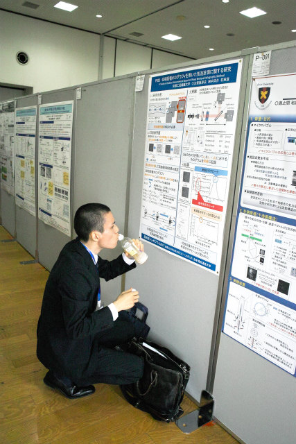

| ・ 混相流シンポジウム2017@東京 (H29.08.19-21) | |||
混相流シンポジウム2017にて，光計測の研究で，M1のK保西くんが「位相回復ホログラフィを用いた気泡計測に関する研究」をポスター発表，助教の人が「位相回復ホログラフィを用いた微粒子計測に関する研究」を口頭発表しました．違いはK保西くんが気泡，助教の人が固体粒子です．あとは液滴加えれば3相制覇！ここ3年ほどでポスター発表の機会は春の機械学会と光学会と増えてきましたが，今後は混相流も追加になりそうです．助教の人は3年前の札幌から混相流に参加（その前は2006年の金沢）で学生参加は初めてです． |
|||
|
電通大出身の東先生お薦め「かれんど」 |
キーマカレーがお薦めとのこと．ビーフにしました． | ||
|
東先生のアドバイスを元に下見 |
支店が調布にいっぱいありました | ||
|
ここは二日目の会場になりました |
横丁が他にもいっぱい | ||
|
電通大は来年で100周年 |
ウチと同じ日に院試 | ||
|
逆光 |
近くに商店街 | ||
|
？ |
鬼太郎 | ||
|
再開発の匂い |
昔は地上に線路 | ||
|
ショートプレゼンは2分 |

発表前に設置済み | ||
|
就活用に撮って |
HP用，瞬きしてた | ||
|
説明中 |
非常に活気のあるポスター | ||